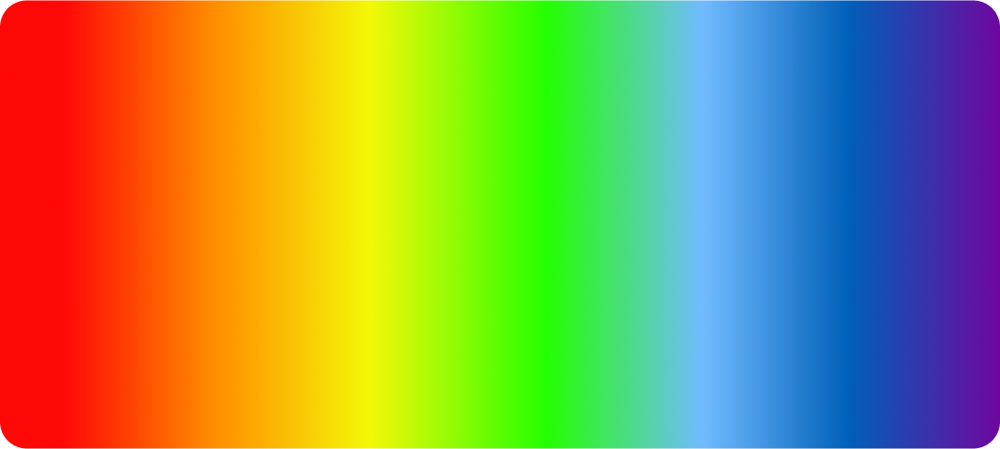

Mr.Buterbrod
Бутерброд дня!
18 часов
до нового бутерброда
А поКа
Бутерброд дня/сегодня

Бутерброд "Вкусные Пиксели"
Плохое качество или особый стиль?
Ингридиенты
- 1 дисплей компьютера или монитора
- 1 графический редактор (например, Photoshop или GIMP)
- 100 г пикселей разных цветов
- 1 магическая мышь
- Сок половины лайма
- Соль и перец по вкусу
- Опционально: кинза или петрушка для украшения
Инструкции
- Включите ваш компьютер или монитор и откройте графический редактор.
- С помощью магической мыши начните "вырезать" пиксели из вашего экрана. Убедитесь, что они разных цветов, чтобы сделать ваш бутерброд ярким и разноцветным.1
- Разместите пиксели на экране графического редактора так, чтобы они напоминали форму бутерброда.
- Поиграйтесь с фильтрами и настройками графического редактора, чтобы добавить немного текстуры и "вкуса" вашему пиксельному бутерброду.
- Когда вы закончите, вы можете сохранить свой шедевр как "Пиксельный бутерброд.jpg" и поделиться им со своими друзьями в социальных сетях.
- Приготовьтесь к тому, что ваш бутерброд будет нулевых калорий и 100% цифровым!
Галерея
Противопоказания
- "Повышенная Цифровая Чувствительность": Возможно, вы столкнетесь с симптомами повышенной чувствительности к цифровым вкусам, такими как учащенные щелчки мыши и аллергические реакции на звуки компьютерных клавиш.
- "Дефицит Виртуальных Калорий": Будьте осторожны, употребление цифровых бутербродов может вызвать дефицит виртуальных калорий, что приведет к невероятному почти-необщимому ощущению голода в виртуальном мире.
- "Пиксельная Зависимость": Возможно, после употребления цифрового бутерброда вы начнете испытывать зависимость от пикселей, и ваши сны будут наполнены маниакальным стремлением к созданию идеального пиксельного искусства.
- "Электронный Рефлекс": Существует риск развития электронного рефлекса, при котором ваша рука автоматически будет пытаться "щелкать" на все окружающие объекты, ожидая возможность "расфокусировать" их.